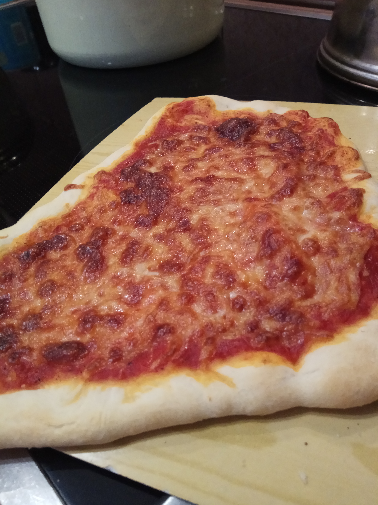
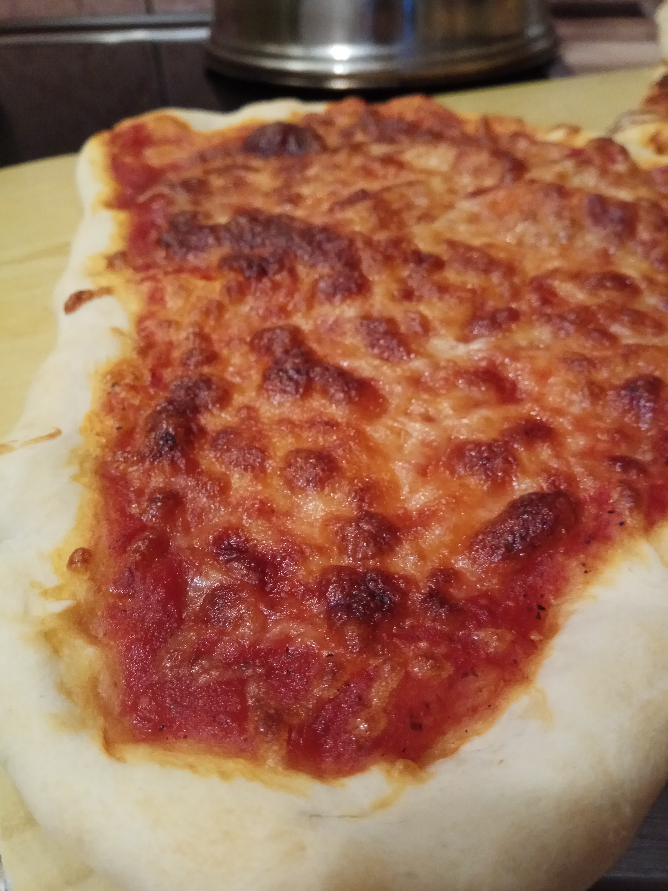
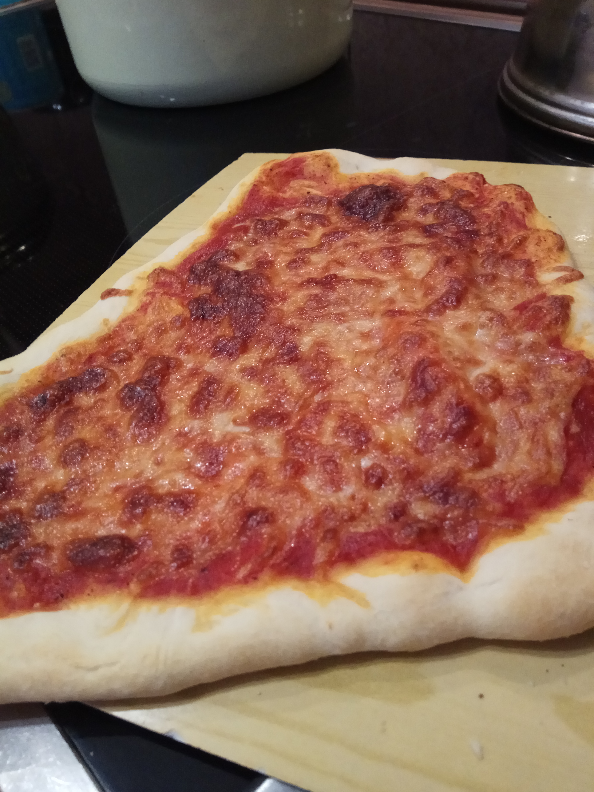
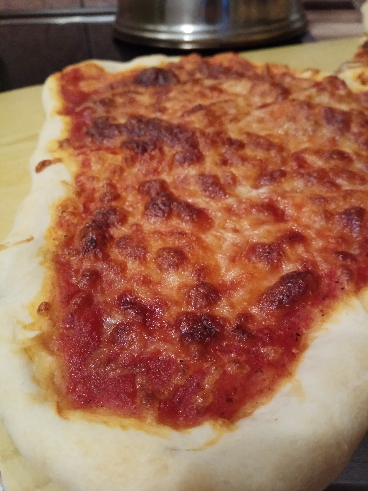

Margherita
Najpopularniejsza we wszystkich pizzeriach na świecie pizza margherita powstała w 1889 roku. Podczas podróży po Włoszech królowa Margherita di Savoia chciała poznać zwykłe, codzienne, najbardziej popularne dania regionalne, które jedli jej poddani. Wraz z mężem (Margherita i Umberto di Savoia) odwiedzili Neapol. Tamtejszy piekarz - Raffaele Esposito, przygotował na życzenie królowej najprostszą potrawę – pizzę, w której obok ciasta składnikami były tylko pomidory, ser mozzarella i bazylia.Danie było nie tylko smaczne. Królowa od razu spostrzegła, iż w tej zwykłej codziennej potrawie znalazły się trzy narodowe barwy Włoch: czerwień pomidorów, biel sera i zieleń bazylii. Tak spodobało się królewskiej parze to proste danie, iż zezwolono, by nazwano pizzę imieniem Margherita. Do dziś jest to nazwa najpopularniejszej, najprostszej wersji włoskiej pizzy. Można ją dostać w każdej pizzerii we Włoszech i prawie na całym świecie. Choć nazywana bywa również margarita czy margeritta, to jej nazwa pochodzi od pierwszego imienia królowej Margherity Marii Teresy Giovanni di Savoia. Pizzę można więc nazwać w Polsce po prostu pizza Małgorzata.
 


